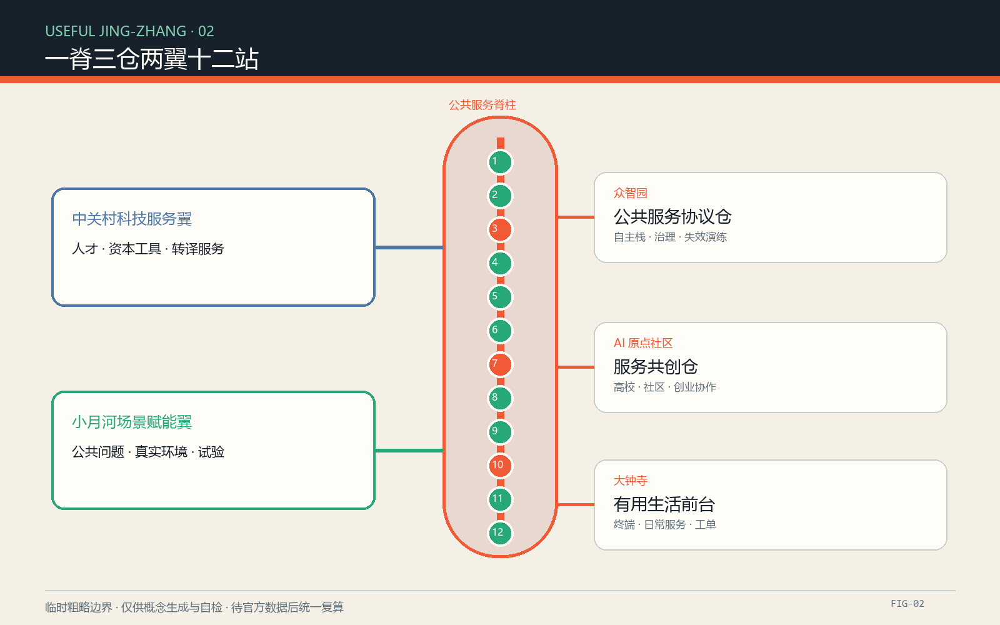
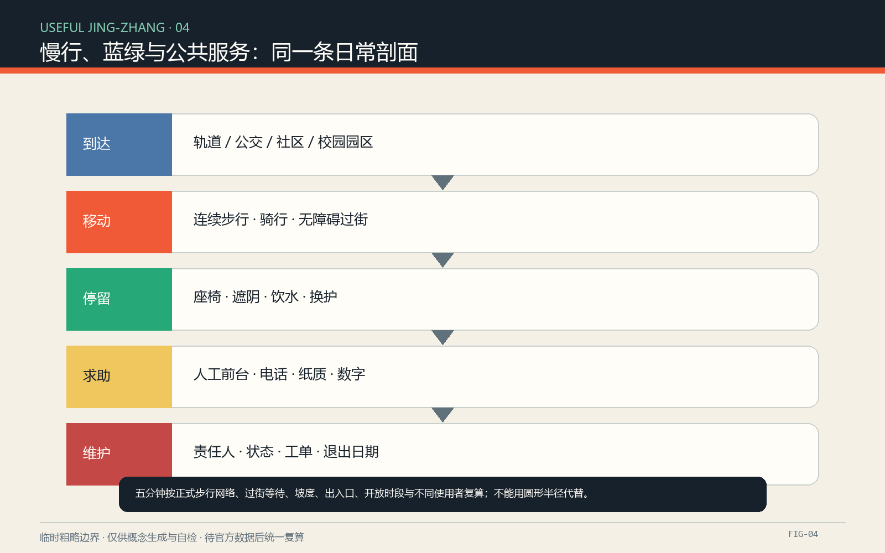

43.6 km²
统筹研究：生态与制度
AI 城市，不从技术开始，从一件小事能否办成开始。
当前使用临时粗略边界；所有位置、面积、覆盖和分期须在正式资料到位后统一复算。

统筹研究：生态与制度
总体设计：服务网络
重点区域：三仓验证
公共服务协议仓｜全栈自主、治理、失效演练
服务共创仓｜高校、社区、创业协作
有用生活前台｜日常服务、终端、工单
研发验证、蓝绿公共、产业生活服务、社区照护均为示意角色，不是法定地块。
先调查，后轻改；优先可逆加装，必要新增须专业论证。
权属、结构、文保、消防、市政和控规条件未齐，不作拆改留结论。

全部场景卡
产业验证场景
人工或离线兜底
临时总体边界计算值，低置信度
示意绿地比例，低置信度
示意公共空间比例，低置信度
agent.1 总体概念｜agent.2 全球生态｜agent.3 12 场景与 6 画像｜agent.4 公共空间与 3 地标｜agent.5 三层文化叙事｜agent.6 年度运营
以提交时 self_check.json 为准
临时边界警示不阻断内容评分
历史、公共价值、可实施性、隐私与无障碍
公告、清权任务书、仓库数据包与 10 项官方或机构一手案例来源，完整登记见 sources.json。
关键假设见 assumptions.json：官方边界、设施、路网、权属、建筑、市政与文保资料均待补；三仓、十二站和年度运营均为概念建议。